INTRODUCTION
Azur Lane Profile
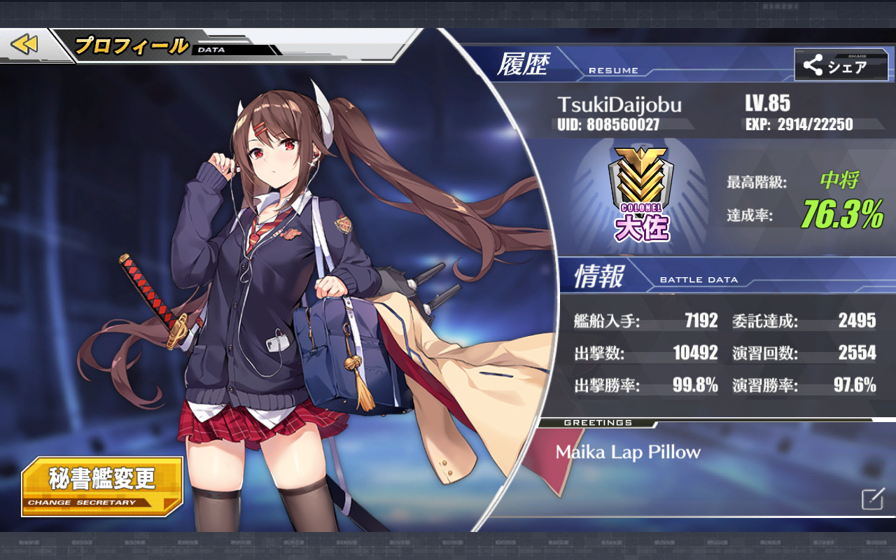Hello :) and Welcome to my website.My name is Ali Wumpa, i'm the person who own this Azur Lane profile with IGN Tsuki Daijobu.I'm create this website just for fun and trying to develop my skill in web development.Also i want to share my Azur Lane experience to you guys for this website content.
What is Azur Lane ?
First of all,who doesn't know what Azur Lane is,Azur Lane is a side scrolling ship shooter mobile game developed by Chinese Game Developer Manjuu which taking scenarios of battle World War II (based on wikipedia.)
The gameplay is quite simple,you build up your ship's fleet with objective taking down opponent's fleet to clear a map.Usually i call opponent's fleet a node.There are three type node which is normal,treasure,and boss node.
- Normal node : a normal opponent's fleet to unlock boss node in the map with 3 type difficult which is easy,normal,and hard.
- Treasure node : an opponent's fleet with treasure ship which give us an equipment box or coin.
- Boss node : a boss opponent's fleet that unlocked in the map after taking down a few normal node.
| (1)in-node gameplay | (2)exploration node in map |
| 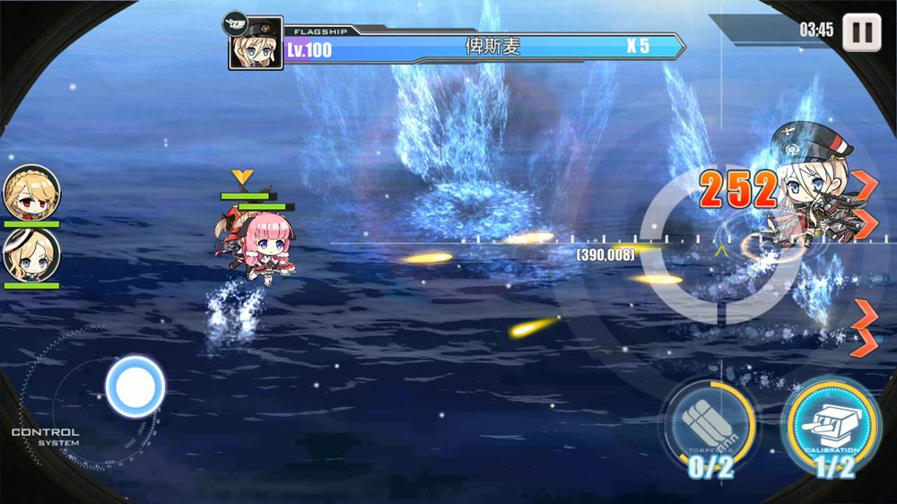 | 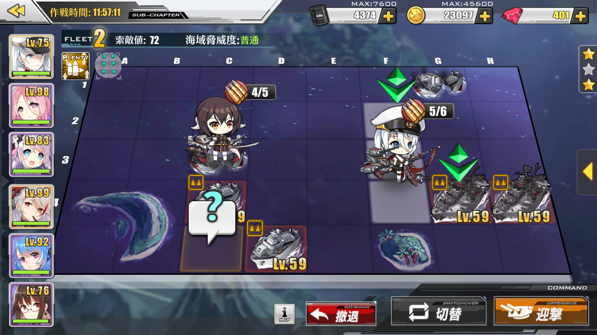 |
User Interface Azur Lane

This is the main menu display in Azur Lane. As you can see, there are many moonrunes of japanese that you probably can't understand.So on this section i will explain to you the functional of these features on main menu:
- Admiral's profile : this is your account status information
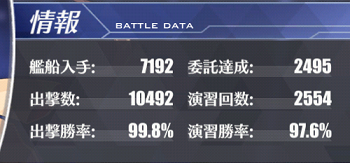 Japanese moonrunes translate are on this table below :
Battle Data Ship's acquired Commisions completed Sortie's attempted (PvE) Excercise's attempted (PvP) Sortie's win percentage (PvE) Excercise's win percentage (PvP) - Gem's Store : A place for you to spend your gem to buy exclusive skin, packaged item to get cube, coin, oil, and drill.(Whaler usually buy this XD) And other things like wedding ring, expand dockyard and equipment etc.
- Dockyard : this is your ship's place. You can uncap, retrofit, and adjust equipment for your ship in Dockyard.
- Equipment : you can access your ship's weapon from here. There are 4 different tabs in this feature.
- Design : Manufacture a weapon for your ships. 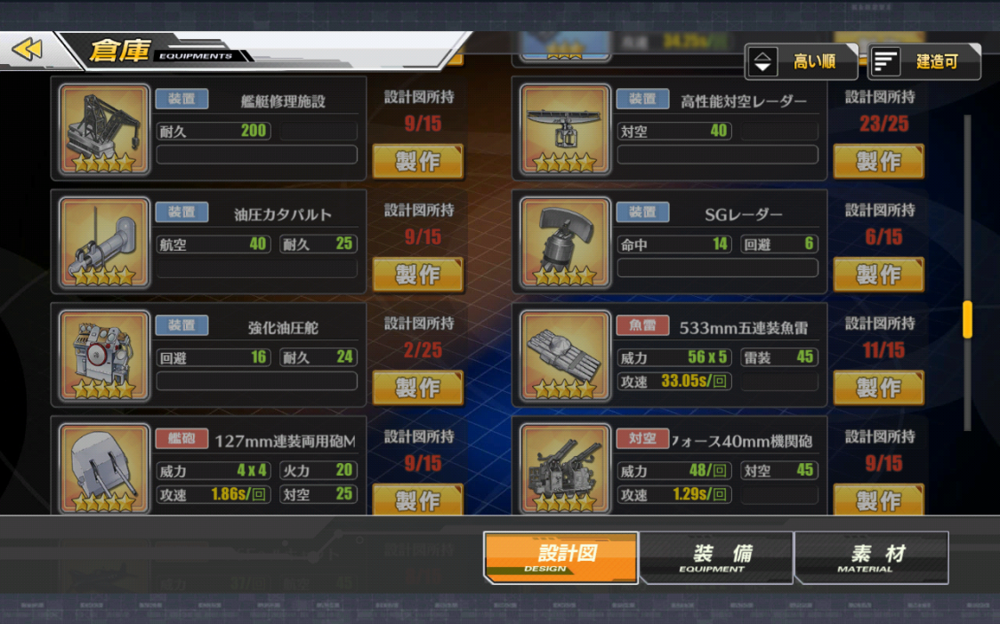
- Destroy : scrap your weapon into coins and plat to be used for upgrading weapons. (gambar menyusul nigga)
- Equipment : list of weapon that you got from map or tech box and you can see the detailed information like damage, fire power etc of your arsenal in here. 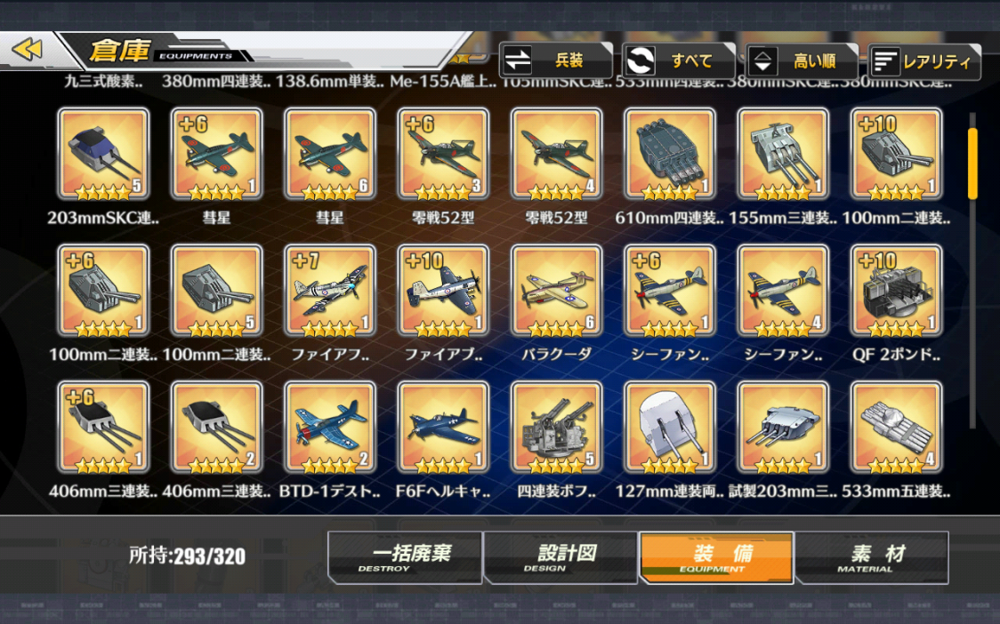
- Material : list of materials/items like food, techbox, blueprint, upgrade plat,etc. 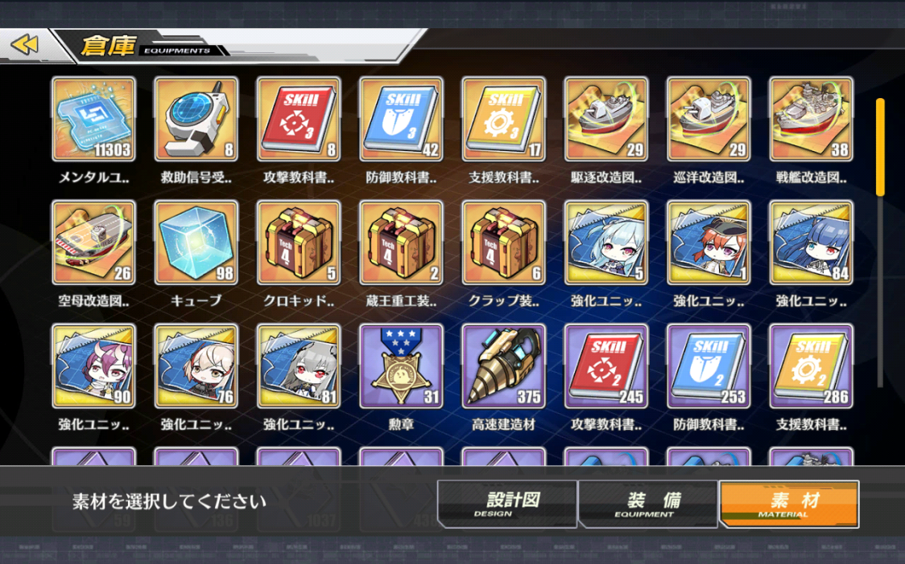
- Living area : This feature divided into 2 sections :
- living room : A place to comfort your ship girl to raise their affection. 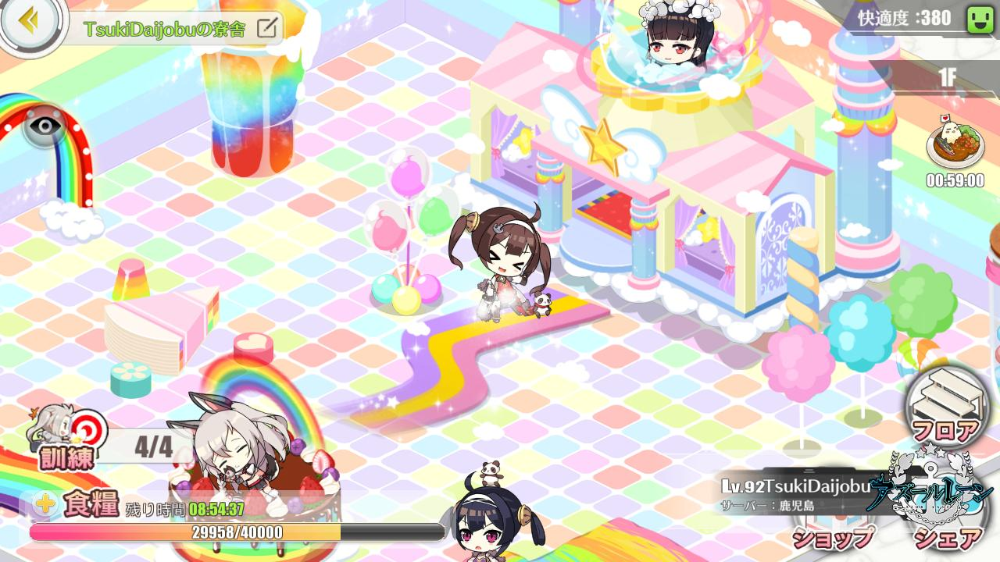
- shop area : There are 3 sections with different function in this place :
- Store : a place to buy equipment (plat materials, food for living room, tech box). 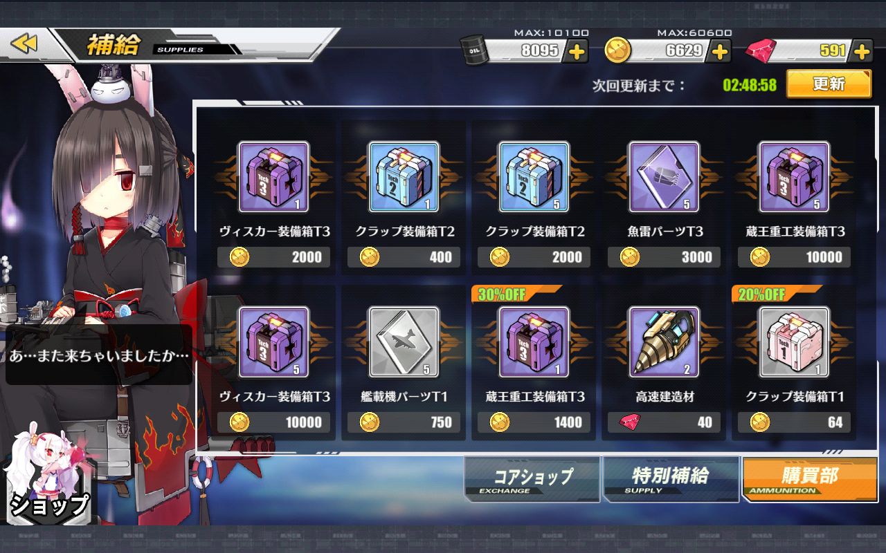
- Tactics : a place to upgrade ship girl's skills. 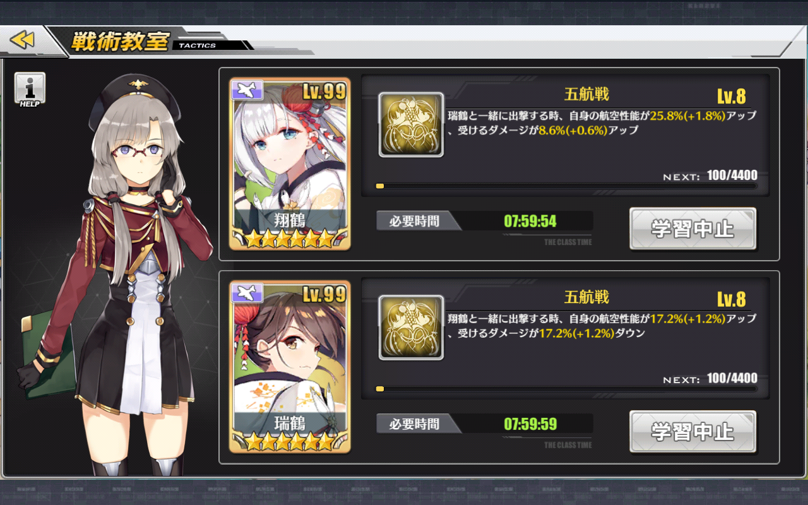
- Classroom : a place to raise ship girl's experience. 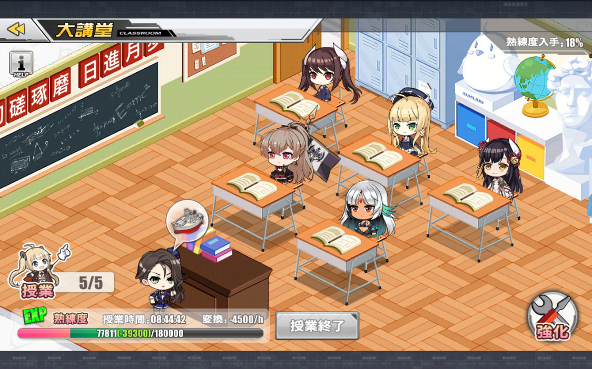
- Research : this feature allow you to get prior ship (exclusive ship's girl which can only be obtained by accomplishing 8 different tasks), blueprint and prior weapon's design.
- Task : daily and weekly mission that could be completed (Highly recommended).
- Building : there are 4 different section on this feature.
- Ship Construction : for building your ship girl.
- Ship Construction Time : allow you to see how much time left for your ship to be constructed.
- Exchange : allow you to exchange your medal points into materials or ship girl.
- Reduce : allow you to deconstruct your ship girl into medal point (1 R rarity into 1 medal,1 SR rarity into 4 medals,1 SSR rarity into 10 medals).
- Fleet/Guild : This feature allows you to form or find a guild.
- Commision tab : Tab to check your expedition's countdown.
- Fleet's ship : Create your ships girl's fleet formation.
- Weigh Anchor : Launch your ship girl's to fight node in the map.
- Ongoing event : Launch your ship girl's to map event. You can also check event progress and reward here.
usually, I refer all equipment gear, ships list, skills description, and also maintenance/update notification in azurlane.koumakan site